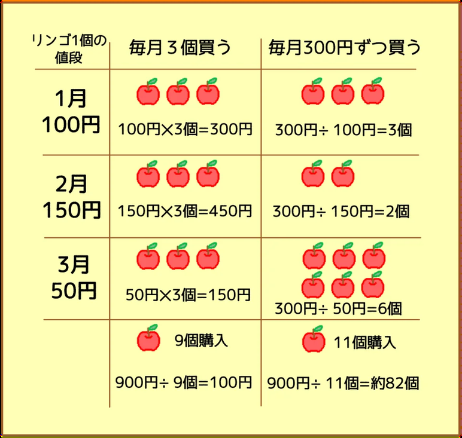
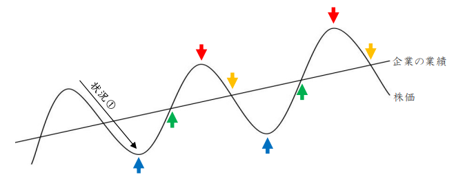

GIA BUSINESS SEMINAR
会社を見る目
良い会社を見つけるだけでは足りない。
数字から、会社の変化を読み取る。
教育目的のセミナーです。事例はすべて架空企業を使用しています。
TODAY'S PROMISE
数字は、会社の答えではない。
次にどこを見るかを教えてくれる。
90分後、自社の数字にも「次の問い」が見える状態を目指します。
SPEAKER
講師：五島 一将
15年
投資の実務
株式のほか、不動産・FX・暗号資産まで経験。証券・保険の営業資格も保有しています。
日本一
教えてきた実績
家庭教師の契約数で日本一。小中学生に教えてきたので、難しいことを噛み砕いて伝えます。
心理×脳
つまずきの解消
心理学・脳科学の資格保有。どこでつまずくか、どう外すかを理論として説明できます。
Q
知人から、こう言われました。
「うちの会社に100万円出資してくれ」
何を聞きますか？
紙に3つ書いてください — 2分
WHAT YOU ALREADY KNOW
皆さんから出てきた質問
何の会社？
売上は？
利益は？
借金は？
社長は誰？
今後伸びる？
どう儲けている？
いま挙げてくださったもの。これが、企業分析です。
01
CHAPTER 01
株を買うとは、
会社の一部を買うこと
上場した瞬間に、なぜ私たちは会社を見なくなるのでしょうか。
ONE SIMPLE REFRAME
株を買う ＝ 会社の一部を買う
知人の会社に100万円を出すことと、判断の本質は同じです。

なのに、上場企業になると
さっきの質問を誰もしなくなる。
知人の会社なら
事業・利益・借金・人を見る
株になると
チャート・ニュース・「上がりそう」を見る
皆さんは経営者としては、
会社を見られます。
株になると急に、見なくなるだけです。
今日はその目を、そのまま上場企業に向けます。
02
CHAPTER 02
値段と価値は、
別物です
用語を覚える前に、まず自分の感覚で判断してみます。
CASE X
この会社に出資すると考えてください。
X社
売上高10億円
営業利益1.5億円
当期純利益1億円
現金3億円
有利子負債なし
ここでは、株主から見た会社の値段 ＝ 時価総額として考えます。
FIRST PRICE
10億円なら、買いますか？
挙手してください
SAME COMPANY, DIFFERENT PRICE
100億円なら、買いますか？
同じ会社です
いま皆さんは、
価値と値段を比べる判断をしました。
その感覚を、1つの数字にしたのがPERです。
PER
利益の何年分を払うのか。
10億円 ÷ 1億円 ＝ 10倍
営業利益ではなく、当期純利益を使います。
REFERENCE
PERの水準は、業種によって違います。
AVERAGE
およそ 15倍
日本の上場企業の平均と言われる水準。業種によって、この平均は大きく上下します。
CAUTION
30倍を大きく超えたら
期待が先行していないかを疑う。流行しすぎていないか、を確認しにいく。
業種ごとの平均は覚えなくて結構です。「いま見ている会社は、同業と比べて高いのか安いのか」——それだけ確認できれば十分です。
PBR
積み上げた純資産と、市場価格を比べる。
10万円で売られている財布に、20万円が入っていたら
PBR 0.5倍
10万円で売られている財布に、2万円しか入っていなければ
PBR 5倍
注意： 帳簿上の資産が、そのまま現金で残るわけではありません。（参考：はじめのうちは1.5倍以内を目安にする考え方もあります）
BREAK THE EASY ANSWER
「PER10倍なら買う」には、まだ情報が足りない。
利益が毎年減っていたら？
売上の8割が1社だったら？
市場そのものが縮んでいたら？
社長が来年退任したら？
1億円が、土地売却による一時的な利益だったら？
PERは答えではない。次に何を調べるかを教える入口です。
EQUITY RATIO
その会社は、誰のお金で回っているか。
自分のお金と、銀行など他人のお金の割合。
高いほど、借金に頼らずに持ちこたえられる。
参考値： 40％以上あると、財務が安定していると見られます。ただし設備の重い業種と身軽な業種では、適正な水準が違います。
TOP LINE & PROFIT
売上と利益は、増えているか。
売上高
事業の大きさ
まず伸びているか。減っているなら、その理由を探しにいく。
経常利益
金利まで含めた儲け
受取利息や支払利息まで含めた、会社全体の実力。
ただし、1年だけを見ないこと。 次の章で、5年並べると何が見えてくるかを扱います。
DIVIDEND
会社が、株主に利益を分けるお金。
株価1,000円・配当50円なら
利回り 5％
配当50円のまま、株価が500円に下がると
利回り 10％
参考値： 2〜3％以上あると嬉しい水準。ただし利回りが高いのは、株価が下がったからかもしれません。
MARKET CAP
その会社は、どのくらいの大きさか。
SMALL
数百億円以下
値動きは大きくなりやすい。その分、伸びしろも大きい。
LARGE
1,000億円以上
規模が大きく、比較的安定しやすい。
QUICK REFERENCE
会社を選ぶときに見る、6つの数字。
| 指標 | 何を見るか | 参考値 |
|---|
| 自己資本比率 | 誰のお金で会社が回っているか | 40％以上 |
|---|
| PBR | 財布の値段と、中身の比較 | 小さいほど割安・目安1.5倍以内 |
|---|
| 業績 | 売上と利益が増えているか | 増加傾向 |
|---|
| PER | 利益の何年分を払うか | 平均15倍・30倍超は要注意 |
|---|
| 配当利回り | 株主への還元 | 2〜3％以上 |
|---|
| 時価総額 | 会社の大きさ | 1,000億円以上は安定寄り |
|---|
あくまで参考値です。 業種と成長段階で、適正な水準は変わります。数字そのものより、なぜその水準なのかを確認しにいく方が大事です。
TURN THE LENS INWARD
あなたの会社は、いま
いくらで売れますか。
利益の何倍がつく会社でしょうか。
非上場企業の価格は、この計算だけでは決まりません。役員報酬、オーナー依存、純有利子負債、顧客集中度なども影響します。
03
CHAPTER 03
良い会社は、
5年並べると見えてくる
3社の数字を比べ、最後に価格を加えて判断します。
1年の数字には事情が出る。
5年の数字には会社の体質が出る。
点ではなく、変化の方向を見ます。
SIX SIGNALS
今回は、6つの変化だけを見ます。
売上高
粗利益率
営業利益・率
有利子負債
自己資本比率
営業CF
さきほどの6つは「会社を選ぶ」ための数字。
ここからの6つは「会社がどちらへ動いているか」を見る数字です。
COMPARISON WORK
会社として最も強くなっているのは、どこでしょうか。
| A社 | B社 | C社 |
|---|
| Y1 | Y2 | Y3 | Y4 | Y5 | Y1 | Y2 | Y3 | Y4 | Y5 | Y1 | Y2 | Y3 | Y4 | Y5 |
|---|
| 売上高 | 50 | 62 | 78 | 95 | 118 | 80 | 80 | 82 | 83 | 85 | 40 | 52 | 68 | 88 | 114 |
|---|
| 粗利益率 | 35% | 33% | 30% | 27% | 25% | 28% | 30% | 32% | 34% | 36% | 32% | 32% | 31% | 31% | 30% |
|---|
| 営業利益 | 5.0 | 5.6 | 6.2 | 6.6 | 7.1 | 4.0 | 4.8 | 5.7 | 6.6 | 7.7 | 3.0 | 4.0 | 5.5 | 7.0 | 9.0 |
|---|
| 営業利益率 | 10.0% | 9.0% | 7.9% | 6.9% | 6.0% | 5.0% | 6.0% | 7.0% | 8.0% | 9.1% | 7.5% | 7.7% | 8.1% | 8.0% | 7.9% |
|---|
| 有利子負債 | 5 | 12 | 22 | 34 | 45 | 20 | 16 | 12 | 7 | 2 | 8 | 14 | 22 | 32 | 45 |
|---|
| 自己資本比率 | 45% | 42% | 38% | 34% | 32% | 40% | 46% | 52% | 58% | 64% | 50% | 44% | 38% | 33% | 30% |
|---|
| 営業CF | +3.5 | +3.0 | +2.5 | +2.0 | +1.5 | +4.5 | +5.2 | +6.0 | +6.8 | +7.5 | +2.0 | +1.0 | ▲0.5 | ▲2.0 | ▲5.0 |
|---|
まず1社選び、理由を1つ書いてください
COMPANY A
Y1
Y2
Y3
Y4
Y5
売上高
50
62
78
95
118
粗利益率
35%
33%
30%
27%
25%
有利子負債
5
12
22
34
45
仮説： 値下げか、原価高か、安い案件が増えたか。
次に見る： 商品別の粗利、案件構成、借入金の使い道。
COMPANY B
Y1
Y2
Y3
Y4
Y5
粗利益率
28%
30%
32%
34%
36%
営業利益
4.0
4.8
5.7
6.6
7.7
有利子負債
20
16
12
7
2
営業CF
+4.5
+5.2
+6.0
+6.8
+7.5
読み取れる変化： 稼ぐ力が上がり、借金が減り、現金を生む力も強くなっている。
COMPANY C
Y1
Y2
Y3
Y4
Y5
営業利益
3.0
4.0
5.5
7.0
9.0
営業CF
+2.0
+1.0
▲0.5
▲2.0
▲5.0
有利子負債
8
14
22
32
45
仮説： 回収か在庫のどちらかが詰まり、借入で現金を補っている。
次に見る： 営業CFの内訳、売掛金、棚卸資産。
THE MOMENT IT BECOMES YOUR BUSINESS
利益は出ているのに、
現金が減っている。
この瞬間、自社の売掛金と在庫が頭に浮かびませんか。
NOW REVEAL THE PRICE
この値段なら、どこに出資しますか。
| A社 | B社 | C社 |
|---|
| 時価総額 | 40億円 | 105億円 | 55億円 |
|---|
| 当期純利益 | 4.0億円 | 5.2億円 | 5.5億円 |
|---|
| PER | 10倍 | 20倍 | 10倍 |
|---|
会社の強さと、値段を一緒に考えてください
THE DECISION CHANGES
一番強くなったB社が、一番高い。
危なく見えたA社が、一番安い。
「良い会社」はわかっても、「良い投資先」は価格で変わります。
CORE MESSAGE
良い会社と、
良い投資先は、同じではない。
良い会社を、どの値段で買うのかまで考える。それが企業分析です。
THREE COMMON TRAPS
数字を見たとき、やりがちな3つの飛躍。
PERが低い ＝ 割安
低い理由があるかもしれない。市場が「伸びない」と見ている可能性も確認する。
決算が良い ＝ 株価上昇
株価を動かすのは、良し悪しだけでなく市場の期待との差。
高配当 ＝ 良い会社
利益以上に配れば、会社の体力を削っている可能性がある。
04
CHAPTER 04
良い会社を、
どう買うか
見方がわかっても、買い方を間違えると結果は安定しません。
DIVERSIFY
3つに、分ける。
時期
タイミングの分散
暴落は必ず起きるうえに、いつ来るかは予測できない。だから時期を分けて買う。
会社
銘柄の分散
気に入った会社が見つかっても、1社に集中させない。目安は5〜30社。
業種
業種の分散
景気に敏感な業種と、影響を受けにくい業種を混ぜる。
分散は「当てられないこと」を前提にした設計です。予測を諦めるかわりに、生き残る確率を上げる。
DOLLAR COST AVERAGING
個数ではなく、金額を決めて買う。

払った金額は、どちらも900円
「毎月1個買う」と「毎月300円分買う」。同じ金額を払っても、手元に残る数量が変わります。
4か月目に1個100円で売ると、金額を決めて買った側にだけ200円の利益が出ます。安いときに、多く買えているからです。
WHY IT WORKS
積立が効くのは、相場が荒れているときです。
波があった方が、平均の取得単価は下がります。
一時的に含み損でも、一喜一憂せず淡々と続ける。
投資である以上、相場環境によってはマイナスになることもあります。
WHERE TO BUY
口座は、ネット証券で十分です。
01
手数料
店舗を持たないネット証券の方が、手数料は安く済む。
02
単元未満株
本来100株単位の日本株を、1株から買える。
03
注文の時間帯
単元未満株なら、取引時間を気にせず注文を出せる。
まずは1株だけ、実際に1社を持ってみてください。持った瞬間から、その会社の決算の見え方が変わります。
APPENDIX
おまけ：業績は伸びているのに、株価が下がっているとき。

①の状態
業績は右肩上がりなのに、株価は下がっている。適正な水準より安くなっている可能性があります。
ただし下がっている最中は危険です。 反発を確認してから考える、というのが基本的な向き合い方になります。
APPENDIX
おまけ：トレンドの転換を、どう見るか。

緑の矢印で買い、赤や黄の矢印で売る——という考え方です。本編の企業分析とは別の技術なので、今日はここまでにします。
05
CHAPTER 05
「見方」を、
一人で使える力へ
情報はあります。止まるのは、情報が足りないからではありません。
WHY ANALYSIS STOPS
公開情報があっても、結論までは進めない。
01
何を取るか
大量の情報から、判断に必要な数字を選ぶ。
02
何と比べるか
過去・同業・業種特性との比較軸を持つ。
03
どう結論にするか
数字から仮説を立て、言葉にする。
TWO LAYERS
道具と学びは、役割が違います。
TOOL
Company Note
数字を集め、5年で並べ、比較しやすくする。
調べる手間を減らす道具。
LEARNING
スクール
数字から仮説を立て、判断を言語化する。
一人で結論を出せるようになる場。
FREE AND PAID
無料では、地図を渡す。
有料では、一人で目的地まで行けるようにする。
基準は会社・業種・成長段階で変わる。
その「基準の当て方」を、実践で身につけます。
TAKE-HOME SHEET
まず、この並びで自社の数字を書いてみる。
売上高 5年
粗利益率
営業利益 5年
営業利益率
有利子負債
自己資本比率
営業CF
EPS
PER
PBR
配当利回り
時価総額
宿題： 自社の数字を、この並びで一度書いてみてください。
企業分析は、
株式投資だけの技術ではありません。
他社を見る目を持つことで、
自社を見る目も変わります。